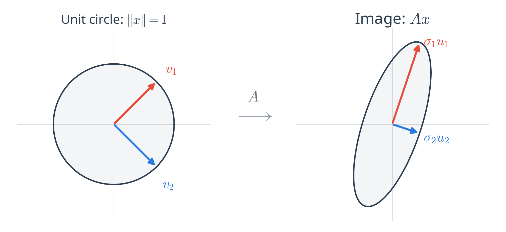
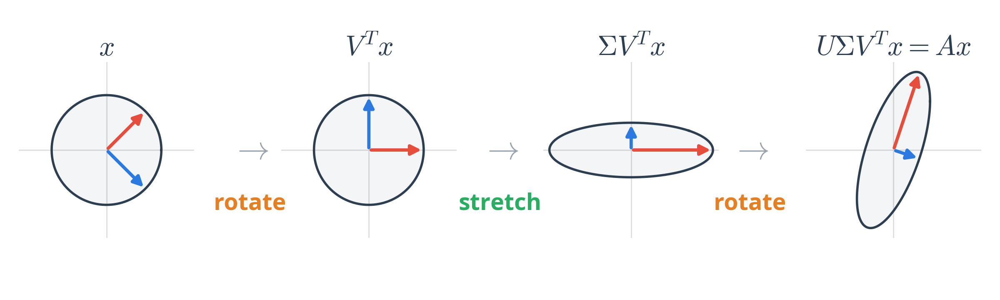
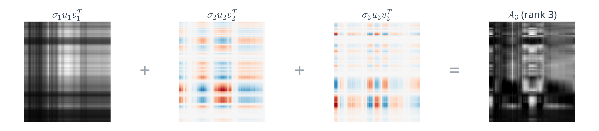
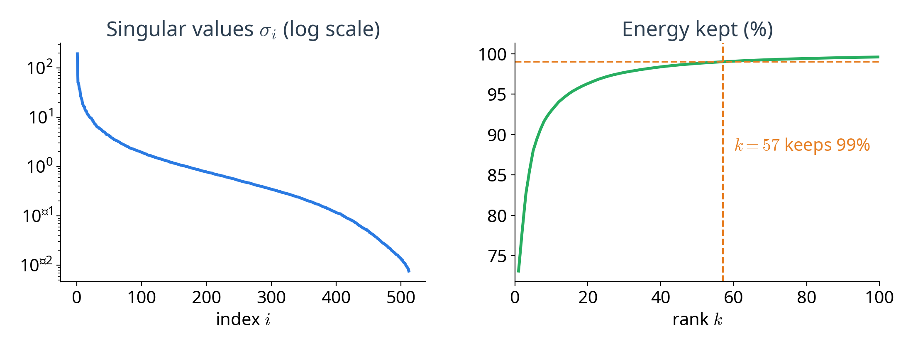
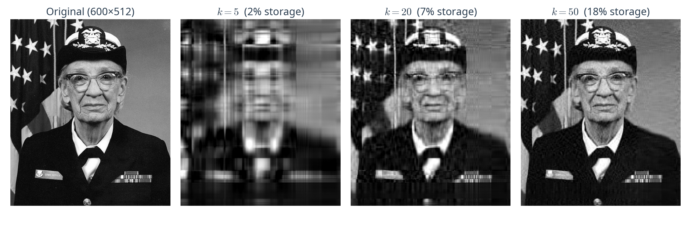

IAI · UET · VNU
Presenter: Trinh Ngoc Huynh
Email: huynhtn@vnu.edu.vn
A matrix as a geometric transformation
Definition, derivation and the link to PCA
Computing and truncating the SVD
Compression, recommendation, text and least squares
When SVD falls short
Multiply every point \( x \) on the unit circle by a matrix \( A = \begin{bmatrix} 3 & 0 \\ 4 & 5 \end{bmatrix} \):

A matrix maps a circle to an ellipse: some directions are stretched far more than others.

align the input with the special directions
scale each axis by \( \sigma_i \)
place the result in the output space
Every matrix, of any shape, is a rotation, a stretch, and a rotation.
needs a square, symmetric matrix (e.g. the covariance in PCA)
works for any \( m \times n \) matrix, including the raw data matrix \( X \)
SVD generalises eigendecomposition to every matrix.
Every real matrix \( A \in \mathbb{R}^{m \times n} \) can be factorised as:
left singular vectors: output directions
singular values: stretch factors on the diagonal
right singular vectors: input directions
The number of non-zero \( \sigma_i \) is the rank of \( A \).
the direction stretched the most
prevents arbitrary scaling
the same problem as PCA, with \( A^T A \) in place of \( C \)
then \( u_1 = A v_1 / \sigma_1 \)
\( v_1 \) is the direction \( A \) stretches most, and \( \sigma_1 = \|A v_1\| \) is how much.
Substituting \( A = U \Sigma V^T \) into the two symmetric products:
\( V \) = eigenvectors of \( A^T A \)
\( U \) = eigenvectors of \( A A^T \)

Each layer is a simple pattern: the first few already capture the main structure.
Take the SVD of the centred data matrix \( X_c = U \Sigma V^T \). Then:
right singular vectors
squared singular values
projected data
PCA is the SVD of the centred data matrix, without ever forming the covariance matrix.
any matrix, and a target rank \( k \)
the \( k \) strongest directions and their stretch factors
Running example: \( A = \begin{bmatrix} 3 & 0 \\ 4 & 5 \end{bmatrix} \)
Gram → Decompose → Map → Truncate
Multiply \( A \) by its transpose: an \( n \times n \) symmetric matrix
\( \|Av\|^2 = v^T A^T A v \): it measures how much \( A \) stretches each direction
\( A^T A \) is symmetric, so it has orthogonal eigenvectors.
Eigenvectors give the input directions \( v_i \)
Eigenvalues are the squared stretch factors
Sort by \( \sigma_i \), largest first.
Map each input direction through \( A \) and normalise
\( A v_i \) points along \( u_i \) with length exactly \( \sigma_i \)
Now \( A = U \Sigma V^T \) holds exactly.
Keep only the \( k \) largest singular values
Small \( \sigma_i \) carry little information (often noise)
The error of dropping a layer is exactly its singular value.
The truncated SVD \( A_k \) is the best rank-\( k \) approximation of \( A \):

Choose \( k \) from the energy \( \sum_{i \le k} \sigma_i^2 / \sum_i \sigma_i^2 \) kept, e.g. 99%.
A grayscale image is a matrix: store \( k(m + n + 1) \) numbers instead of \( m \times n \).

\( k = 50 \) keeps 98.8% of the energy with only 18% of the storage.
Ratings \( R \) (users × movies) are explained by a few hidden tastes:
how much each user likes each hidden factor
e.g. action vs romance, old vs new
how much each movie has each factor
Latent-factor models of this kind won the Netflix Prize (2009).
Term–document matrix: rows are words, columns are documents, entries are counts.
words embedded in topic space
strength of each topic
documents embedded in topic space
“car” and “automobile” land close together: they appear in similar documents.
Solve \( \min_x \|Ax - b\| \), even when \( A \) is not square or not invertible:
works for rank-deficient and ill-conditioned systems
tiny \( \sigma_i \) blow up \( 1/\sigma_i \): drop them (truncated SVD)
Numerical libraries use SVD as the most reliable way to solve least squares.
web-scale ratings or text matrices do not fit in memory
we usually need only the top \( k \ll n \) components
Alternatives: randomized SVD, iterative solvers (Lanczos) that compute only the top \( k \)
a 1-D curve in 2-D is not low-rank
multiplicative effects are not captured by a sum of layers
Alternatives: kernel methods, autoencoders
over 99% of user–movie ratings are unknown
treats “unrated” as “disliked”
Alternatives: matrix factorisation fitted only on observed entries (ALS, SGD)
a “topic” with negative word weights has no clear meaning
hard to point to the few features that matter
Alternatives: non-negative matrix factorisation (NMF), sparse PCA
SVD is the workhorse of linear algebra in ML: know when its assumptions break.
Next lecture: Partial Least Squares Regression